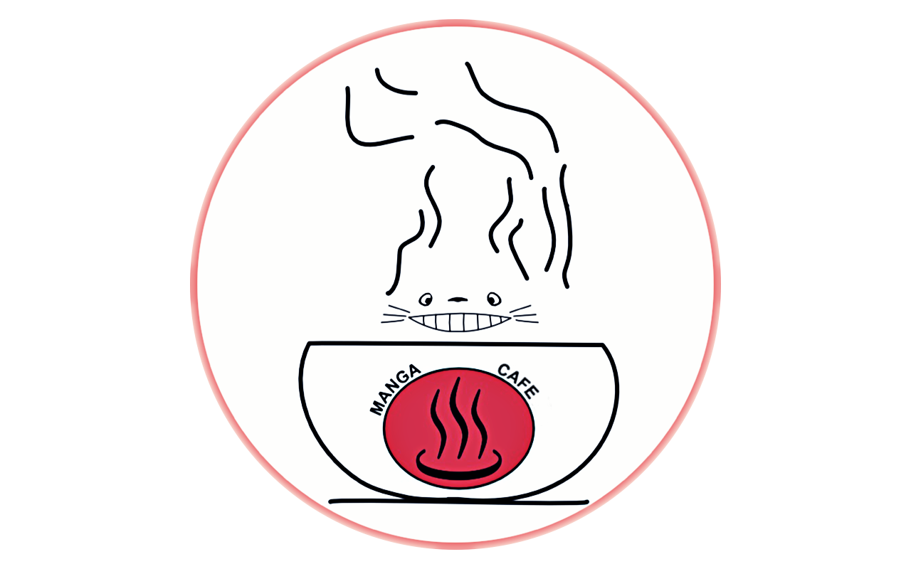
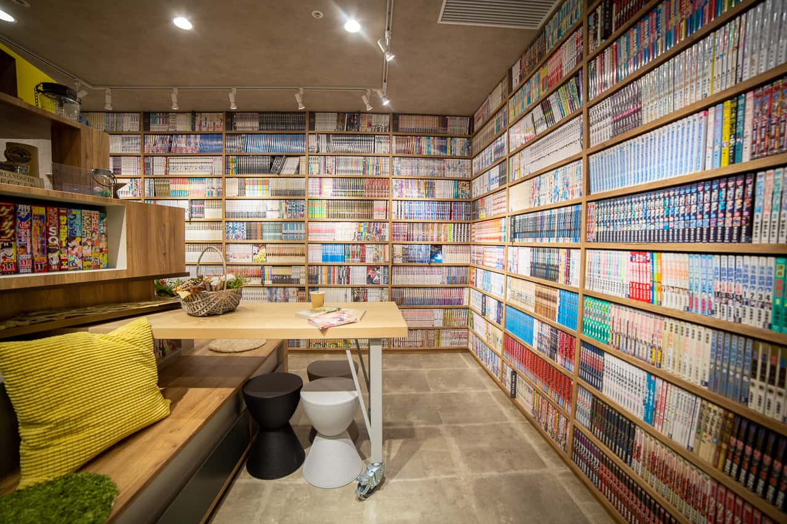

MANGA-CAFÉ
Proyecto fin de grado (DAW)
Nicolás Rosende Pérez
MANGA-CAFÉ
Manga-café = Cibercafé + Hostal + Biblioteca

Sitio web para el manga-café
-
Se ha creado una página web para mejorar la visibilidad.
-
Permite gestionar la reserva de productos.
-
Permite gestionar la reserva de asientos/habitaciones reservadas.
Justificación de necesidad
Entorno económico
- Momento de crecimiento económico ( PIB un 2% por encima del nivel previo a la pandemia).
- Interés general de los bancos de 4.5% (0.5% al inicio del año).
- Inflación anual del IPC del 3.5% (6% al inicio de año).
Entorno político
- Cumplir con las normativas de apertura para el manga-café.
- Gestionar las licencias y permisos necesarios para un manga-café.
Entorno social
- Mayor demanda gracias a la creciente popularidad de anime y manga.
- Zona turística favorece el servicio de hostal.
Entorno tecnológico
Se buscará contar con tecnologías emergentes que puedan mejorar la experiencia del cliente, como
aplicaciones móviles o sistemas de reserva en línea.
Symfony
- Plantillas TWIG.
- Estructura MVC (Modelo Vista Controlador).
- Conexión a Base de Datos.
PHP
- Lado sevidor.
- Gestionar peticiones del cliente (reservas, productos, registros).
JavaScript
- Lado cliente.
- Animaciones, funcionalidad.
- Comprobación en formularios.
MySql
Se guardarán los usuarios,productos, reservas de habitaciones y productos y los roles.
HTML y CSS
Para crear la página estática y sus estilos.
Bootstrap
- Facilita la creación de estilos.
- Ahorra tiempo y reduce el tamaño de los archivos CSS.
Reveal.js
Técnología utilizada para hacer esta presentación.
Funcionamiento del sitio web